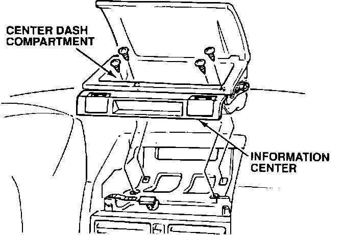
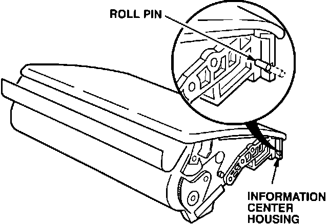
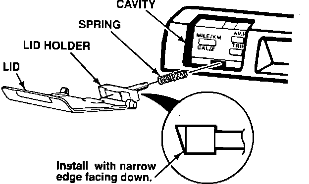
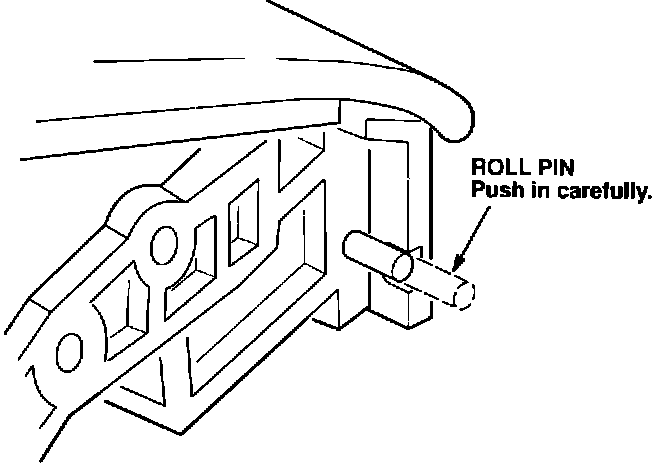
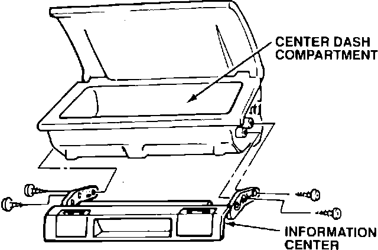
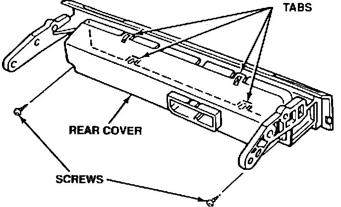
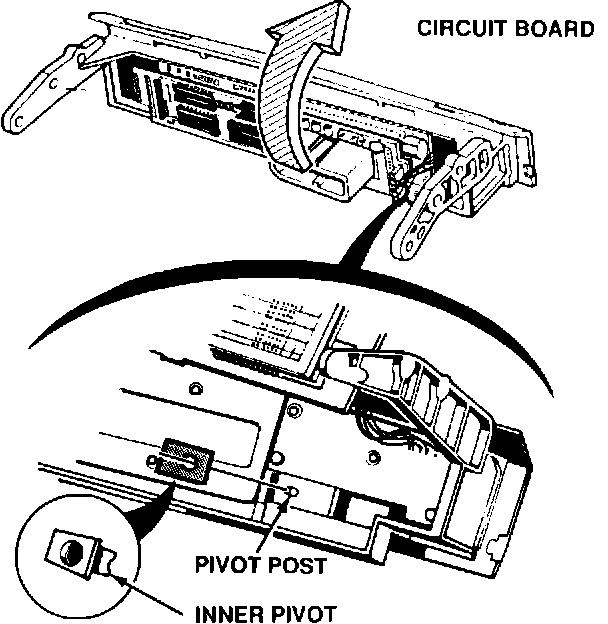

Information Center Lids - Loose or Broken
9213acura01
January 20, 1992
BULLETIN NO.
92-002
VIN APPLICATION
ALL with Info. Center
MODEL
Legend
YEAR
1987 - 1990
Loose or Broken Information Center Lids
PROBLEM
One or both information center lids are broken, missing, or feel loose at the pivot points.
CORRECTIVE ACTION
Replace the broken or missing information center lid(s), or repair the loose pivots.
Broken or Missing Information Center Lid(s)

1. Remove the four screws holding the center dash compartment. Lift the compartment and information center out of the dash as a unit. Disconnect the connector.

2. Remove the roll pin from the information center housing with a small pair of needle nose pliers. Remove the lid, lid holder, and spring from the information center.

3. Insert the new spring and lid holder from the appropriate Lid Kit (see PARTS INFORMATION) into the cavity in the information center.

4. Install the new lid by engaging the side with the plastic pin first, then carefully push the new roll pin into the lid. Check to be sure the lid opens and closes smoothly.
5. Reconnect the connector to the information center/center dash compadment, then install it in the dash.
Loose Lid Pivot(s)
1. Remove the center dash compartment and information center as shown in step 1 of the previous procedure.

2. Remove the four screws attaching the information center to the center dash compartment.

3. Remove the two small screws from the rear cover of the information center. Carefully lift up on the four plastic tabs and remove the rear cover.

4. Lift the circuit board up and away from the information center housing. Locate the loose black plastic inner pivot part(s). Reinstall the pivot(s) on the pivot post(s) and glue them in place with Cyanoacrylate adhesive (Super Glue).
5. Reinstall the circuit board and the rear cover on the information center housing.
6. Reattach the information center to the center dash compartment.
7. Reconnect the connector and install the information center/center dash compartment in the dash.
PARTS INFORMATION
System Check Lid Kit: P/N 39661-SG0-305
Trip Function Lid Kit: P/N 39661-SG0-306
WARRANTY INFORMATION
In warranty: The normal warranty applies.
Out-of-warranty: Any repair performed after warranty expiration may be eligible for goodwill consideration by the District Service Manager. You must request consideration, and get the DSM's decision, before starting work.
Operation Flat Rate
Number Description Time
841211 Install information center lid 0.2 hour
kit(s)
841011 Repair information center 0.3 hour
lid pivot(s)
841216 Install information center lid 0.4 hour
kit(s) and repair lid pivot(s)
Failed P/N: P/N 39660-SG0-A01
Defect code: 018
Contention code: A01